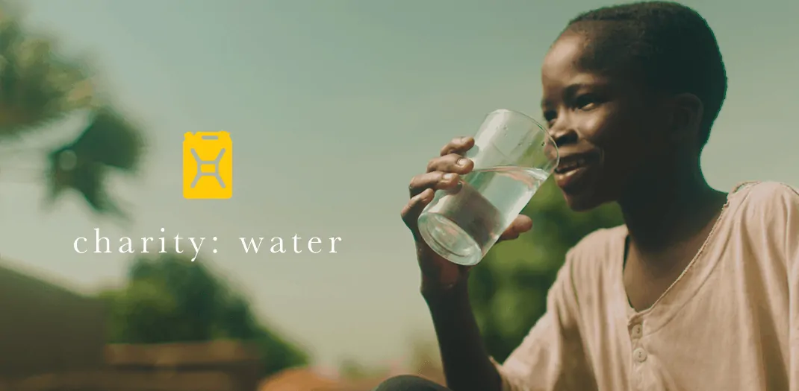

Clean water changes everything.

Why Water?
For people in developing countries, clean water can change everything.
How do we tackle the water crisis?
Health Diseases from dirty water kill more people every year than all forms of violence, including war.
We work with local experts and community members to find the best sustainable solution in each place where we work, whether it’s a well, a piped system, a BioSand Filter, or a system for harvesting rainwater. And with every water point we fund, our partners coordinate sanitation and hygiene training, and establish a local Water Committee to help keep water flowing for years to come.
Every $1 invested in joint water supply and sanitation provides a $4.30 economic return.6 It’s a solid investment; access to clean water is perhaps the single most powerful tool for sparking economic growth that humanity has ever known.
Education Clean water helps keep kids in school, especially girls.Less time collecting water means more time in class. Clean water and proper toilets at school means teenage girls don’t have to stay home for a week out of every month.
Time Every day, women and girls around the world spend an estimated 200 million hours collecting water.3 4 Access to clean water gives communities more time to grow food, earn an income, and go to school -- all of which fight poverty.Women Empowerment Women and girls are responsible for water collection in 8 out of 10 households with water off premises.5 When a community gets water, women and girls get their lives back. They start businesses, improve their homes, and take charge of their own futures